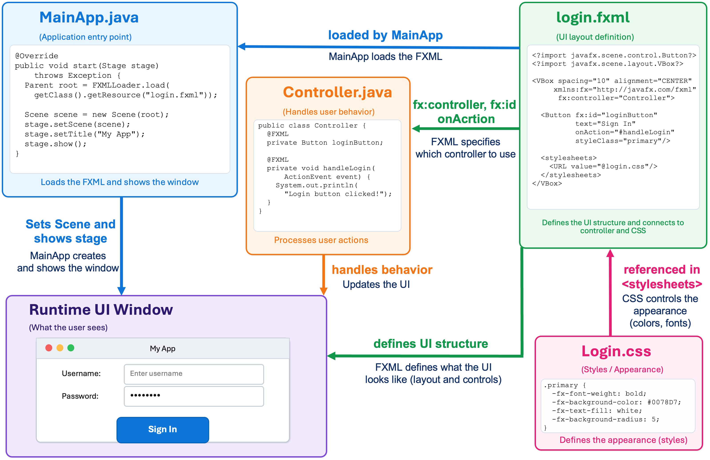

JavaFX
Liting Zhang
University of West Florida
Roadmap
Build the JavaFX mental model.
Create controls, layouts, and event handlers.
Read and validate user input.
Separate appearance with CSS.
Describe the same UI with FXML and connect a controller.
Manage stateful commands with menus, dialogs, files, properties, listeners, and binding.
Keep the interface responsive during background work.
Survey optional visual APIs.
Learning Goals
Explain
Stage,Scene, layouts, nodes, and the scene graph.Build forms with controls, event handlers, validation, and CSS.
Read FXML as JavaFX object construction written in XML.
Use
fx:id,@FXML, andonActionto connect FXML to a controller.Use properties, listeners, binding, menus, dialogs, and files in a stateful application.
Move slow work off the JavaFX Application Thread.
Main question: how does user input become a correct, visible change on screen?
JavaFX Overview
JavaFX is a Java library for building desktop graphical user interfaces.
It provides windows, buttons, labels, text fields, menus, dialogs, images, charts, animation, and drawing tools.
It uses a scene graph: a tree of UI objects.
It supports CSS styling and FXML layout files.
It is useful for desktop apps, teaching GUI design, and visualizing algorithms.
JavaFX is also a way to practice event-driven programming.
JavaFX vs Swing
| Topic | Swing | JavaFX |
|---|---|---|
| UI model | Component hierarchy | Scene graph |
| Styling | Look and Feel / UIManager | CSS-like stylesheets |
| View construction | Mostly Java code | Java code or FXML |
| Graphics | Custom painting | Nodes, Canvas, animation APIs |
| Thread rule | Swing EDT | JavaFX Application Thread |
Shared rule: UI updates must happen on the toolkit's UI thread.
Application Structure
A JavaFX app starts from an Application subclass.
main(...)
↓
launch(args)
↓
JavaFX runtime starts
↓
start(Stage primaryStage)
↓
build scene graph
↓
put Scene on Stage
↓
show StageAfter the window appears, the event loop waits for user actions.
Stage, Scene, and Nodes
| Level | Meaning | Example |
|---|---|---|
Stage | Top-level window | The app window |
Scene | Content area inside the window | Scene with width and height |
| Root layout | Container at the top of the scene graph | VBox, BorderPane, GridPane |
| Nodes | Visible UI objects | Button, Label, TextField |
Scene Graph
The scene graph is a tree of UI nodes.
Stage
└── contains Scene
Scene
└── root: BorderPane
├── top: MenuBar
├── center: GridPane
│ ├── Label
│ ├── TextField
│ └── Button
└── bottom: LabelLayouts are parent nodes that hold other nodes.
Controls such as buttons and text fields are usually leaf nodes.
Changing the scene graph changes what the user sees.
First Application
public class HelloWorld extends Application {
public static void main(String[] args) {
launch(args);
}
@Override
public void start(Stage primaryStage) {
Button btn = new Button("Say 'Hello World'");
StackPane root = new StackPane();
root.getChildren().add(btn);
Scene scene = new Scene(root, 300, 250);
primaryStage.setTitle("Hello World");
primaryStage.setScene(scene);
primaryStage.show();
}
}Example: cop4027.javafx.basic.HelloWorld
Three Questions for a GUI
| Question | JavaFX idea | Example |
|---|---|---|
| What appears? | Controls | Label, TextField, Button |
| Where does it go? | Layouts | GridPane, VBox, HBox |
| What happens? | Events | setOnAction(...) |
Most JavaFX screens combine all three.
Common Controls
| Control | Purpose |
|---|---|
Label | Display text. |
TextField | Read one line of user input. |
TextArea | Read or edit multiple lines of text. |
PasswordField | Read hidden password text. |
Button | Trigger an action. |
CheckBox | Represent true / false choice. |
ComboBox | Choose one item from a list. |
Layout Managers
A layout manager decides where child nodes go.
Use layouts instead of manually setting every x and y position.
Choose a layout that matches the structure of the screen.
Layouts help the UI adapt when the window size changes.
Layouts can be nested inside other layouts.
| Layout | Best use |
|---|---|
VBox | Stack items vertically. |
HBox | Place items in one horizontal row. |
BorderPane | Top, bottom, left, right, center structure. |
GridPane | Forms with rows and columns. |
StackPane | Center one item or overlay nodes. |
FlowPane | Wrap items like words in a paragraph. |
Example: LayoutSample.java
Event-Driven Code
GUI programs create the UI, show the window, and wait for user actions.
When the user clicks, types, or selects something, an event is created.
An event handler is code that responds to that event.
Button submitButton = new Button("Submit");
Label feedback = new Label();
submitButton.setOnAction(event -> {
feedback.setText("Button was pressed.");
});User clicks button
↓
ActionEvent is created
↓
handler runs
↓
feedback Label changesLogin Form
A login form combines controls, layout, and an event handler.
GridPane grid = new GridPane();
grid.setHgap(10);
grid.setVgap(10);
TextField userTextField = new TextField();
PasswordField pwBox = new PasswordField();
Button btn = new Button("Sign in");
Label actiontarget = new Label();
grid.add(new Label("User Name:"), 0, 1);
grid.add(userTextField, 1, 1);
grid.add(new Label("Password:"), 0, 2);
grid.add(pwBox, 1, 2);
grid.add(btn, 1, 4);
grid.add(actiontarget, 1, 6);
btn.setOnAction(event ->
actiontarget.setText("Sign in button pressed")
);Example: cop4027.javafx.basic.Login
Form Workflow and Validation
A form event should follow a predictable sequence.
User enters values
↓
Button event handler reads the controls
↓
Validator checks data rules
↓
Validator returns a message
↓
GUI displays feedback| GUI class | Validator class |
|---|---|
Reads TextField values | Receives ordinary Java strings |
| Handles button events | Applies reusable rules |
| Shows messages and styles | Returns a feedback message |
| Requires JavaFX to run | Can be tested without opening a window |
Controls collect and display data. Validation rules should be reusable Java logic.
Form Input
Most form programs follow a simple pattern: read, validate, respond.
TextField nameField = new TextField();
TextField emailField = new TextField();
Label feedback = new Label();
Button submitButton = new Button("Validate Details");
submitButton.setOnAction(event -> {
String message = validator.validate(
nameField.getText(), emailField.getText()
);
feedback.setText(message);
});Testable Validation
Keep validation rules separate from JavaFX controls.
public String validate(String name, String email) {
if (name == null || name.isBlank()) {
return "Name is required.";
}
if (email == null ||
!EMAIL_PATTERN.matcher(email.trim()).matches()) {
return "Enter a valid email address.";
}
return "Student details are valid.";
}Example: cop4027.javafx.validation.ValidatedFormApp and cop4027.javafx.validation.FormValidator
Why CSS?
CSS separates visual design from Java behavior.
| Java code | CSS stylesheet |
|---|---|
| Create controls and layouts | Set fonts, colors, spacing, and borders |
| Handle events | Style normal, hover, focused, and disabled states |
| Read and update data | Reuse the same visual style across controls |
scene.getStylesheets().add(
LoginCSS.class.getResource("/Login.css").toExternalForm()
);CSS Selectors
| Selector | Syntax | Java connection | Applies to |
|---|---|---|---|
| Type | Button { } | Node type | All buttons |
| ID | #password-input { } | setId("password-input") | One specific node |
| Style class | .primary-button { } | getStyleClass().add(...) | Any node with that class |
| Pseudo-class | .button:hover { } | Node state | Buttons while hovered |
IDs and Classes
An ID is for one specific node. A style class can be shared by many nodes.
Label title = new Label("Welcome");
// A style class can be reused by many controls.
title.getStyleClass().add("title");
PasswordField passwordField = new PasswordField();
// An ID should identify one specific control.
passwordField.setId("password-input");
Button signInButton = new Button("Sign In");
signInButton.getStyleClass().add("primary-button");.title {
-fx-font-size: 32px;
-fx-text-fill: #333333;
}
#password-input {
-fx-border-color: #5b8def;
}
.primary-button {
-fx-font-weight: bold;
-fx-text-fill: white;
}Example: cop4027.javafx.basic.LoginCSS and Login.css
CSS Properties
JavaFX CSS uses JavaFX-specific property names, usually beginning with -fx-.
| Property | Common use |
|---|---|
-fx-font-size | Set text size |
-fx-font-family | Set font family |
-fx-text-fill | Set text color for controls |
-fx-fill | Set fill color for Text or shapes |
-fx-background-color | Set control or region background |
Why FXML?
So far, Java code has created the UI objects directly.
GridPane grid = new GridPane();
Label label = new Label("Welcome");
Button button = new Button("Sign In");
grid.add(label, 0, 0);
grid.add(button, 0, 1);FXML lets us describe the same UI structure in an XML file instead.
<GridPane>
<Label text="Welcome"/>
<Button text="Sign In"/>
</GridPane>FXML describes the UI structure.
CSS controls appearance.
Java controller handles behavior.
Main application loads the FXML and shows the window.
How CSS, FXML, and Java Work Together

FXML Creates JavaFX Objects
FXML is not a picture of the interface. JavaFX reads it and creates real JavaFX objects.
<?import javafx.scene.control.*?>
<?import javafx.scene.layout.*?>
<GridPane hgap="10" vgap="10">
<Label text="User Name:"
GridPane.columnIndex="0"
GridPane.rowIndex="0"/>
<TextField
GridPane.columnIndex="1"
GridPane.rowIndex="0"/>
</GridPane><GridPane>creates aGridPaneobject.<Label>and<TextField>create child objects.Attributes such as
hgap="10"set properties on those objects.Nested elements become nested objects in the scene graph.
The result is the same kind of JavaFX object tree that we previously created with Java code.
Connecting FXML to a Controller
FXML can connect the UI objects it creates to a Java controller.
<GridPane
fx:controller="cop4027.javafx.fxml.FXMLExampleController"
xmlns:fx="http://javafx.com/fxml">
<PasswordField fx:id="passwordField"/>
<Button text="Sign In"
onAction="#handleSubmitButtonAction"/>
<Label fx:id="actiontarget"/>
</GridPane>public class FXMLExampleController {
@FXML
private PasswordField passwordField;
@FXML
private Label actiontarget;
@FXML
private void handleSubmitButtonAction(ActionEvent event) {
String pwd = passwordField.getText();
actiontarget.setText("Sign in pressed");
}
}fx:controllertells JavaFX which controller class belongs to this FXML file.fx:id="passwordField"connects that UI object to the controller field with the same name.onAction="#handleSubmitButtonAction"connects the button event to the controller method.
fx:id and @FXML
fx:id lets the controller get a reference to a JavaFX object created from FXML.
<Label fx:id="actiontarget"/>@FXML
private Label actiontarget;After the FXML is loaded, actiontarget refers to the same Label object that appears in the runtime UI.
Use
fx:idonly when Java needs a direct reference to the node.A node without
fx:idstill exists in the scene graph.@FXMLallowsFXMLLoaderto inject private fields and connect private handler methods.
Connecting FXML to CSS
FXML can also identify nodes for CSS and attach a stylesheet.
<PasswordField
fx:id="passwordField"
id="password-input"
styleClass="input-field"/>
<stylesheets>
<URL value="@Login.css"/>
</stylesheets>#password-input {
-fx-background-color: white;
}
.input-field {
-fx-font-size: 14px;
}fx:id→ connects the node to the Java controller.id→ can be selected with#password-inputin CSS.styleClass→ can be selected with.input-fieldin CSS.@Login.csstells FXML where to find the stylesheet.
Loading the FXML
The main application starts the process by asking FXMLLoader to load the FXML file.
public class FXMLExample extends Application {
@Override
public void start(Stage stage) throws Exception {
Parent root = FXMLLoader.load(
getClass().getResource("/fxml_example.fxml")
);
Scene scene = new Scene(root, 300, 275);
stage.setScene(scene);
stage.setTitle("FXML Welcome");
stage.show();
}
}Main application
↓
FXMLLoader reads the FXML
↓
creates the JavaFX objects
↓
creates the controller
↓
connects fx:id and onAction
↓
returns the root node
↓
Main application puts the root in a Scene
↓
Stage shows the UIFXML Module Access
FXML loading happens at runtime, so the JavaFX runtime needs access to the controller package.
module cop4027.javafx.examples {
requires java.desktop;
requires javafx.controls;
requires javafx.fxml;
exports cop4027.javafx.basic;
exports cop4027.javafx.concurrency;
exports cop4027.javafx.fxml;
exports cop4027.javafx.state;
exports cop4027.javafx.validation;
exports cop4027.javafx.visual;
opens cop4027.javafx.fxml to javafx.fxml;
}requires javafx.fxmllets our code use the FXML API.exports ...makes the public application classes available to other modules at runtime.opens ... to javafx.fxmlgivesFXMLLoaderreflective access to private@FXMLfields and methods.
Even if our own Java code never directly accesses these classes from another package, the JavaFX runtime still needs this access while the application is running.
Common FXML Mistakes
Most FXML problems happen when one of the connections is broken.
FXML file not found: the path passed to
getResource(...)is wrong.Controller not found:
fx:controllerdoes not contain the correct class name.Field not injected:
fx:iddoes not match the@FXMLfield name.Handler not found:
onActiondoes not match an@FXMLmethod.Access error: the controller package is not opened to
javafx.fxml.Style missing: the stylesheet path,
id, orstyleClassdoes not match.
Scene Builder
Scene Builder is a visual editor that creates and modifies FXML.
Open or create an FXML file.
Drag layouts and controls into the interface.
Set properties such as text, spacing, and position.
Set
fx:idfor controls the controller needs.Set event handlers such as
#handleSubmitButtonAction.Set CSS IDs, style classes, or stylesheets when needed.
Save the file and run the JavaFX application.
Scene Builder edits the FXML view. Application behavior still belongs in Java.
Application State
State is information the application remembers between events.
private int count = 0;
Button countButton = new Button("Count");
Label countLabel = new Label("Count: 0");
countButton.setOnAction(event -> {
count++;
countLabel.setText("Count: " + count);
});The handler runs once per click, but count keeps its value between clicks.
Fields and JavaFX Properties
An ordinary field stores a value.
private boolean enabled = true;A JavaFX property stores a value that can also be observed and bound.
private final BooleanProperty enabled = new SimpleBooleanProperty(true);
enabled.set(false);
if (!enabled.get()) {
System.out.println("The command is disabled.");
}Use ordinary fields for values that only need to be stored and checked manually.
Use JavaFX properties when the UI should react to value changes.
Listening for Changes
A listener runs when an observed property changes.
TextField nameField = new TextField();
Label countLabel = new Label("Characters: 0");
nameField.textProperty().addListener((observable, oldValue, newValue) -> {
countLabel.setText("Characters: " + newValue.length());
});Here the listener reacts every time the text field value changes.
Binding
Binding keeps one property synchronized with another value.
Binding can also keep displayed text synchronized with state.
TextField nameField = new TextField();
Button submitButton = new Button("Submit");
// Binding keeps the button state synchronized with the text field.
submitButton.disableProperty().bind(nameField.textProperty().isEmpty());
Label greetingLabel = new Label();
// Binding can also keep displayed text synchronized.
greetingLabel.textProperty().bind(nameField.textProperty().concat(" is typing..."));TextField empty -> Submit disabled
TextField has text -> Submit enabledThe button state follows the text field automatically.
When the text field changes, the label changes without a separate event handler.
Event Handler, Listener, or Binding?
| Situation | Best mechanism | Reason |
|---|---|---|
| User clicks Submit | Event handler | A command starts. |
| User changes text | Listener | A property changed and code should react. |
| Submit should follow text state | Binding | A relationship should stay synchronized. |
Use event handlers for actions, listeners for reactions, and binding for ongoing relationships.
Example: cop4027.javafx.state.EventListenerBindingDemo
Menu Structure and Creation
JavaFX menus are organized as MenuBar → Menu → MenuItem.
MenuBar
└── File ← Menu
├── New ← MenuItem
├── Open ← MenuItem
├── Save ← MenuItem
└── Exit ← MenuItemMenuBar menuBar = new MenuBar();
Menu fileMenu = new Menu("File");
MenuItem newItem = new MenuItem("New");
MenuItem openItem = new MenuItem("Open");
MenuItem saveItem = new MenuItem("Save");
MenuItem exitItem = new MenuItem("Exit");
fileMenu.getItems().addAll(newItem, openItem, saveItem,
new SeparatorMenuItem(), exitItem);
menuBar.getMenus().add(fileMenu);Handling Menu Commands
A menu item fires an action event, just like a button.
newItem.setOnAction(event -> {
// The handler runs when the menu item is selected.
textArea.clear();
statusLabel.setText("New document");
});
exitItem.setOnAction(event -> Platform.exit());The menu changes how the command is presented. The event-handler idea is the same.
Example: cop4027.javafx.state.MenuEventDemo
Confirmation Dialogs
A dialog can ask the user before a command continues.
Alert alert = new Alert(Alert.AlertType.CONFIRMATION);
alert.setTitle("Confirm Clear");
alert.setHeaderText("Clear all text?");
alert.setContentText("Any entered text will be removed.");
// showAndWait displays the dialog and returns the user's choice.
ButtonType choice = alert.showAndWait().orElse(ButtonType.CANCEL);
if (choice == ButtonType.OK) {
textArea.clear();
}showAndWait()displays the dialog and waits for the user's choice.The command continues only if the result says the user confirmed.
Example: cop4027.javafx.state.ConfirmationDialogDemo
Selecting, Opening, and Saving Text
FileChooser selects a path. Files reads or writes the content. If the user cancels, the selected file is null.
FileChooser chooser = new FileChooser();
File openFile = chooser.showOpenDialog(stage); // null if cancelled
if (openFile != null) {
try {
textArea.setText(Files.readString(openFile.toPath()));
statusLabel.setText("Opened: " + openFile.getName());
} catch (IOException ex) {
statusLabel.setText("Unable to open file: " + ex.getMessage());
}
}
File saveFile = chooser.showSaveDialog(stage); // null if cancelled
if (saveFile != null) {
try {
Files.writeString(saveFile.toPath(), textArea.getText());
statusLabel.setText("Saved: " + saveFile.getName());
} catch (IOException ex) {
statusLabel.setText("Unable to save file: " + ex.getMessage());
}
}Example: cop4027.javafx.state.TextFileChooserDemo
Tracking Editor State
The editor can remember whether the text has unsaved changes.
BooleanProperty dirty = new SimpleBooleanProperty(false);
textArea.textProperty().addListener((observable, oldText, newText) -> {
// Listener: editing marks the document as changed.
dirty.set(true);
});
// Binding: the button follows dirty automatically.
markSavedButton.disableProperty().bind(dirty.not());
dirty.addListener((observable, wasDirty, isDirty) -> {
statusLabel.setText(isDirty ? "Unsaved changes" : "Saved");
});dirty = false -> Mark Saved disabled
dirty = true -> Mark Saved enabledExample: cop4027.javafx.state.DirtyStateDemo
Opening with Unsaved Changes
Opening a new file may need to protect unsaved work first.
private void doOpen(Stage stage) {
if (!maybeSaveBeforeLosingChanges(stage)) {
return; // Cancel keeps the current work on screen.
}
FileChooser chooser = new FileChooser();
File file = chooser.showOpenDialog(stage);
if (file == null) {
status.setText("Open cancelled");
return;
}
try {
editor.setText(Files.readString(file.toPath(), StandardCharsets.UTF_8));
currentFile = file; // remember the file for later Save
setDirty(false); // loaded text matches the file
status.setText("Opened: " + file.getName());
} catch (Exception ex) {
status.setText("Open failed: " + file.getName());
}
}Saving with Current File
Saving can reuse the current file. The first save still needs a destination.
private void doSave(Stage stage, boolean forceChoose) {
try {
File target = currentFile;
if (forceChoose || target == null) {
FileChooser chooser = new FileChooser();
target = chooser.showSaveDialog(stage); // first save needs a path
}
if (target != null) {
Files.writeString(target.toPath(), editor.getText(), StandardCharsets.UTF_8);
currentFile = target;
setDirty(false); // saved text now matches the file
status.setText("Saved: " + target.getName());
}
} catch (Exception ex) {
status.setText("Save failed");
}
}Text Editor Event Flow
User edits text
-> listener marks dirty = true
-> binding enables Save
User chooses Save
-> event handler reuses currentFile or chooses a file
-> Files.writeString(...) saves text
-> dirty = false
-> binding disables Save
User chooses Open
-> event handler calls maybeSaveBeforeLosingChanges(...)
-> dialog asks Save / Don't Save / Cancel if needed
-> FileChooser selects file
-> Files.readString(...) loads textPutting it together: cop4027.javafx.state.TextEditorMenuDemo
Stateful Interface Takeaways
State is information remembered between events.
JavaFX properties make state observable and bindable.
Listeners react when a property changes.
Binding keeps related properties synchronized.
MenuBar,Menu, andMenuItemcreate command menus.Dialogs help commands make safe decisions.
FileChooserselects files; Java I/O reads and writes them.Larger applications combine these same mechanisms.
FX Thread and Worker Thread
JavaFX uses one special thread for UI work: the JavaFX Application Thread.
It renders controls, handles user events, and updates the scene graph.
Event handlers already run on this thread.
Slow work should run on a background worker.
Workers should not directly update JavaFX controls.
System.out.println("Button handler: " + Thread.currentThread().getName());
Thread worker = new Thread(() -> {
System.out.println("Worker: " + Thread.currentThread().getName());
}, "background-worker");
worker.start();Button handler: JavaFX Application Thread
Worker: background-workerWhy the UI Freezes
This code runs slow work directly inside the button handler.
startButton.setOnAction(event -> {
for (int step = 1; step <= 100; step++) {
doSlowStep(step);
progressLabel.setText("Step " + step);
}
});Button click
↓
JavaFX Application Thread enters slow loop
↓
cannot process repaint or input events
↓
window appears frozen
↓
loop finishes
↓
JavaFX can process events againThe problem is not the loop itself. The problem is that the UI thread is doing the slow work.
Move Slow Work Off the UI Thread
A worker thread lets the JavaFX Application Thread remain available for the interface.
Thread worker = new Thread(() -> {
doSlowWork();
}, "background-worker");
worker.setDaemon(true);
worker.start();new Thread(...)creates another thread of execution.start()begins executing the worker.The UI thread remains free to repaint and handle events.
But the worker should not directly change JavaFX controls.
Platform.runLater
A worker can ask the JavaFX Application Thread to perform a small UI update.
Thread worker = new Thread(() -> {
doSlowWork(); // runs on background-worker
Platform.runLater(() -> {
statusLabel.setText("Work finished");
System.out.println("UI update: " + Thread.currentThread().getName());
});
}, "background-worker");
worker.setDaemon(true);
worker.start();background-worker → Platform.runLater(...) → JavaFX event queue
→ JavaFX Application Thread → UI changesrunLater() schedules the UI code. It does not move the entire worker onto the UI thread.
Example: cop4027.javafx.concurrency.RunLaterDemo
JavaFX Task
Task represents a background job and exposes JavaFX properties describing that job.
call()contains the background work.progressProperty()represents current progress.messageProperty()represents a status message.runningProperty()indicates whether the task is currently executing.
A Task describes the work. A thread still executes the task.
Background Work in call()
The slow operation goes inside call().
Task<Void> task = new Task<>() {
@Override
protected Void call() throws InterruptedException {
System.out.println(
"Task runs on: " + Thread.currentThread().getName()
);
for (int step = 1; step <= 5; step++) {
Thread.sleep(500); // simulate slow work
updateProgress(step, 5);
updateMessage("Step " + step + " of 5");
}
return null;
}
};call()runs on the worker thread.updateProgress(...)changes the Task's progress state.updateMessage(...)changes the Task's message state.
Task Properties and Binding
Controls can automatically follow the Task's observable properties.
progressBar.progressProperty().bind(task.progressProperty());
statusLabel.textProperty().bind(task.messageProperty());
startButton.disableProperty().bind(task.runningProperty());updateProgress(...)
↓
task.progressProperty()
↓ binding
ProgressBar
updateMessage(...)
↓
task.messageProperty()
↓ binding
LabelThe controls follow Task state without manually updating them after every step.
Starting a Task
A Task contains the work, but something must execute it.
Thread worker = new Thread(task, "task-worker");
worker.setDaemon(true);
worker.start();Task
describes the background work
Thread
executes the Task
Task properties
expose progress and state to JavaFX controlsExample: cop4027.javafx.concurrency.TaskProgressDemo
Task Completion
A Task can notify the application when its work finishes.
task.setOnSucceeded(event -> {
statusLabel.textProperty().unbind();
statusLabel.setText("Complete");
});READY
|
v
RUNNING
|
+----> SUCCEEDED
|
+----> FAILED
|
+----> CANCELLEDTask event handlers such as setOnSucceeded(...) run on the JavaFX Application Thread, so they can safely update controls.
Choosing runLater or Task
User event
↓
Is the work short?
|
+-- Yes → handle it on the JavaFX Application Thread
|
+-- No → run the slow work in the background
|
+-- one small UI update → Platform.runLater(...)
|
+-- progress / messages / state → TaskBoth approaches follow the same rule: slow work stays off the JavaFX Application Thread, while UI changes happen on it.
Visual APIs
| Capability | Best use | Core idea |
|---|---|---|
| Images | Display existing assets | Image in an ImageView |
| Canvas | Draw on one surface | Immediate-mode drawing |
| Charts | Visualize standard data | Data rendered by chart nodes |
| Animation | Change nodes over time | Transitions and timelines |
All four still use JavaFX nodes, properties, or both.
Canvas
Canvas is a drawing surface. GraphicsContext is the drawing tool.
Canvas canvas = new Canvas(360, 360);
GraphicsContext gc = canvas.getGraphicsContext2D();
gc.strokeLine(20, 20, 200, 20);
gc.strokeRect(40, 60, 120, 80);
gc.strokeOval(200, 80, 90, 90);Immediate mode: drawing commands write pixels; they do not add editable shape nodes to the scene graph.
Images
Image loads the picture. ImageView displays it as a node.
Image image = new Image(
getClass().getResource("/cat.jpg").toExternalForm()
);
ImageView imageView = new ImageView(image);
imageView.setFitWidth(200);
imageView.setPreserveRatio(true);
imageView.setSmooth(true);Example: cop4027.javafx.visual.ImageExample
Charts
JavaFX includes chart classes for common data visualizations.
| Chart | Use |
|---|---|
PieChart | Parts of a whole |
LineChart | Trend over time |
BarChart | Compare categories |
ScatterChart | Relationship between two numeric variables |
ObservableList<PieChart.Data> pieData =
FXCollections.observableArrayList(
new PieChart.Data("Cats", 30),
new PieChart.Data("Dogs", 45),
new PieChart.Data("Birds", 10),
new PieChart.Data("Other", 15)
);
PieChart pieChart = new PieChart(pieData);
pieChart.setTitle("Pet Ownership");Example: cop4027.javafx.visual.ChartsDemo
Animation
JavaFX animation changes properties over time.
Rectangle box = new Rectangle(80, 80);
RotateTransition rotate =
new RotateTransition(Duration.seconds(3), box);
rotate.setByAngle(360);
rotate.setCycleCount(Animation.INDEFINITE);
ScaleTransition scale =
new ScaleTransition(Duration.seconds(1.5), box);
scale.setToX(1.5);
scale.setToY(1.5);
scale.setAutoReverse(true);
scale.setCycleCount(Animation.INDEFINITE);
new ParallelTransition(rotate, scale).play();Example: cop4027.javafx.visual.AnimationDemo
Key Patterns and Takeaways
A Stage contains a Scene; the Scene contains a scene graph made of layouts and other nodes.
Controls answer what appears; layouts answer where it goes; event handlers answer what happens.
Use layouts instead of hardcoded positions.
Keep validation rules separate from JavaFX controls.
CSS separates appearance from Java behavior.
FXML describes JavaFX object construction using XML.
Distinguish
fx:id,id, andstyleClass.Use events, listeners, and binding for their distinct jobs.
Stateful applications combine commands, properties, dialogs, and files.
Do not block the JavaFX Application Thread.